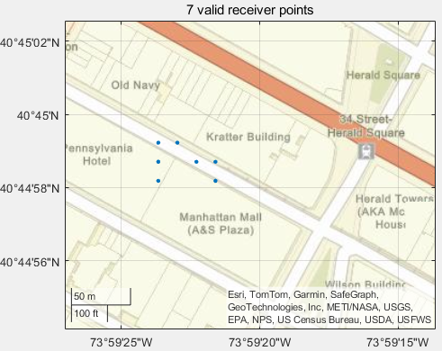
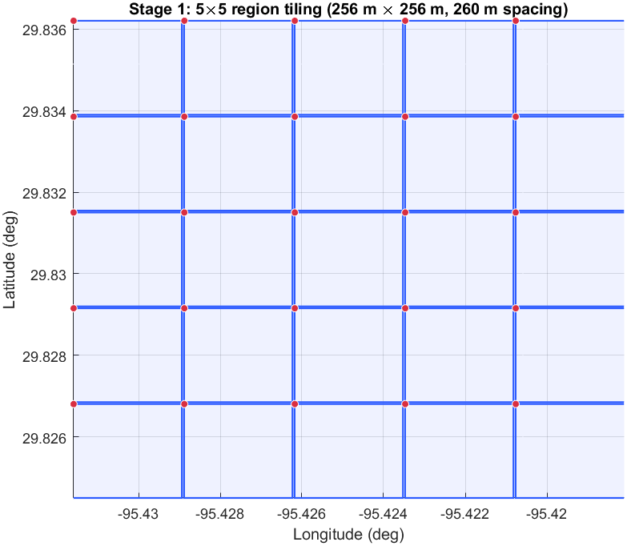
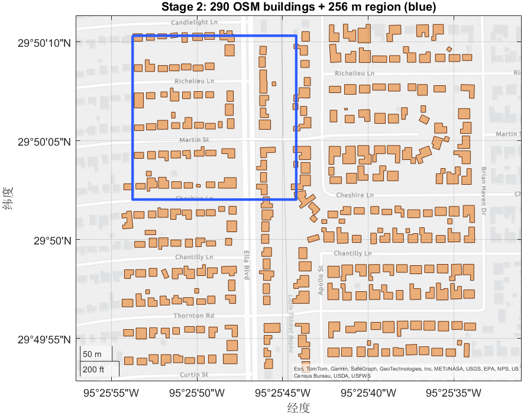
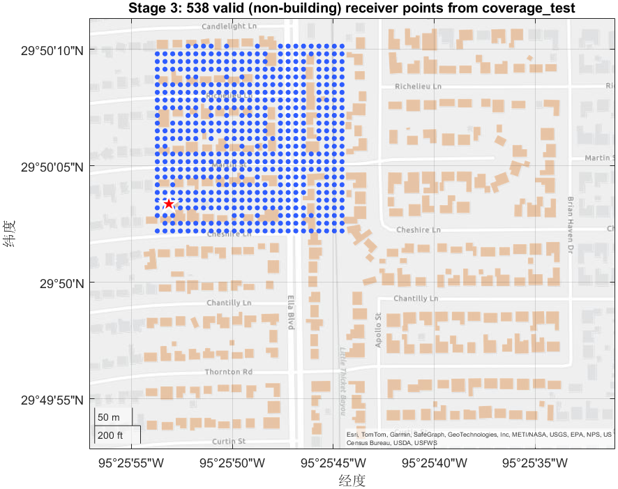
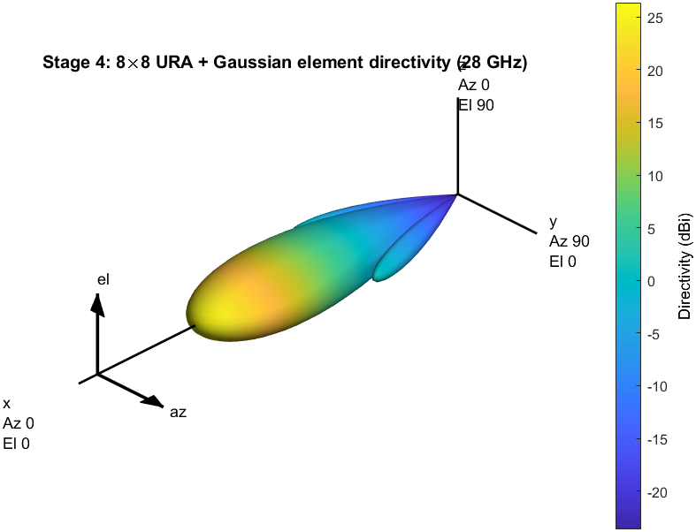
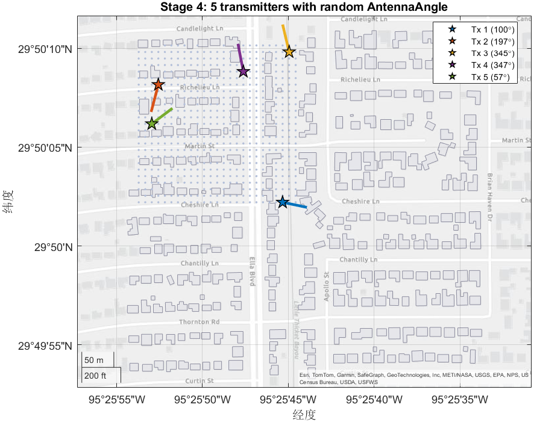
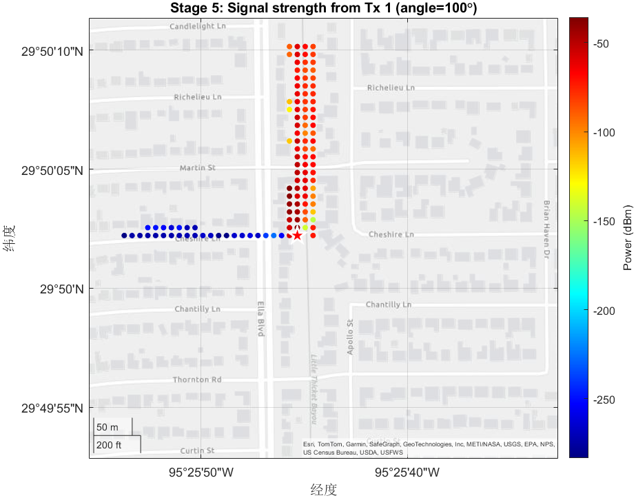
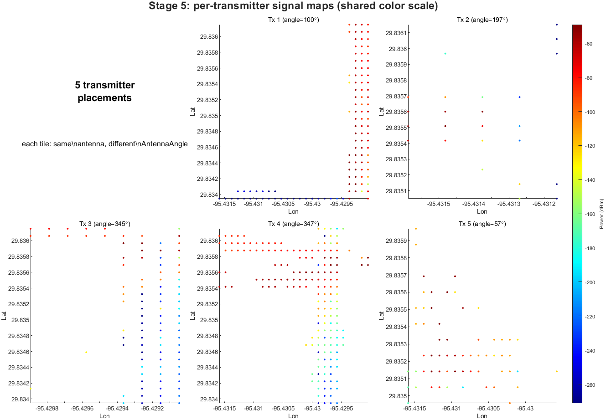

static_trans
Batch-generate per-transmitter signal-strength datasets for static RF simulation over OpenStreetMap building geometry
The static_trans script generates 256 m × 256 m
signal-strength maps for a list of geographic regions using MATLAB ray tracing. For each
region it samples a grid of non-building receiver positions, places a configurable number
of randomly located transmitters (each with an 8×8 directional URA at 28 GHz),
computes the received signal strength at every receiver, and writes one Excel file per
transmitter.
Syntax
static_transstatic_trans_doc exampleDescription
static_trans reads NW-corner coordinates from target_region_1.xlsx,
downloads OpenStreetMap building data for each row, places 135 transmitters uniformly at
random over valid (non-building) grid cells, and writes a per-transmitter receiver-power
table (in dBm) to dataset_<env_num>/<t>.xlsx for t = 1…135.
static_trans_doc is a documented, section-by-section version of the same
pipeline with demo tuning knobs (demoMaxRegions,
demoResolution, demoTotalMaps) at the top of the Algorithm block
so it can be executed end-to-end in about a minute on a typical laptop.
See example
Examples
Run the Full Pipeline for Every Row in target_region_1.xlsx
Reproduce the original static_trans.m behavior. Ensure the current folder
contains target_region_1.xlsx (a two-column table with headers
NW_lat and NW_lon) and the helper file
coverage_test.m.
clear; clc;
env_base = 1; % ≥ 0. Machine offset for parallel runs.
static_transOn completion the script prints per-region and total elapsed time:
Sanity-Check One Region Without Writing Files
Before launching a long batch job, verify the region bounds, the OSM download, and the grid sampling on a single region. Parameters below are reduced for demo speed; expected runtime is a few seconds.
d = 64 m(region side) — production:256Resolution = 15 m— production:1MaxNumReflections = 0— production:0for Stage 3
nw_lat = 40.75;
nw_lon = -73.99;
% Region bounding box (demo: 64 m, not 256 m)
R = 6371 * 1000; d = 64;
delta_lat = (d / R) * (180 / pi);
delta_lon = (d / (R * cosd(nw_lat))) * (180 / pi);
se_lat = nw_lat - delta_lat;
se_lon = nw_lon + delta_lon;
% OSM download
west = nw_lon - (se_lon - nw_lon);
east = nw_lon + (se_lon - nw_lon);
south = nw_lat + (se_lat - nw_lat);
north = nw_lat - (se_lat - nw_lat);
osmAPI = "https://api.openstreetmap.org/api/0.6/map?bbox=" + ...
num2str(west) + "," + num2str(south) + "," + ...
num2str(east) + "," + num2str(north);
system('curl "' + osmAPI + '" > sanity.osm');
% Probe transmitter at region center
siteviewer("Buildings", "sanity.osm", 'Visible', 'off');
tx = txsite('Latitude', (nw_lat+se_lat)/2, ...
'Longitude', (nw_lon+se_lon)/2, ...
'TransmitterFrequency', 28e9, ...
'TransmitterPower', 1, 'AntennaHeight', 2);
% Discover valid grid points (demo: Resolution 15 m, not 1 m)
pm = propagationModel("raytracing", "Method", "sbr", ...
"MaxNumReflections", 0, "MaxNumDiffractions", 0);
a = sin(deg2rad(se_lat-nw_lat)/2)^2 + ...
cos(deg2rad(nw_lat))*cos(deg2rad(se_lat)) * ...
sin(deg2rad(se_lon-nw_lon)/2)^2;
diagonalDistance = R * 2 * atan2(sqrt(a), sqrt(1-a));
[~, ~, lats, lons] = coverage_test(tx, pm, ...
'MaxRange', diagonalDistance, 'Resolution', 15);
inBox = lats <= nw_lat & lats >= se_lat & lons >= nw_lon & lons <= se_lon;
figure; geoscatter(lats(inBox), lons(inBox), 12, 'filled');
geobasemap streets;
title(sprintf('%d valid receiver points', nnz(inBox)));
coverage_test for a 64 m × 64 m region at
(40.75°N, -73.99°W) with Resolution = 15. The blue dots fall in
open spaces between buildings (Pennsylvania Hotel, Kratter Building, Manhattan Mall)
along 34th Street near Herald Square. Increasing Resolution from
15 to 1 would return several hundred points at the cost of
roughly 225× longer ray-tracing runtime.
Resolution (e.g., to 5) for a denser point cloud;
lower to 1 for production quality but expect a ×225 runtime increase.
Change the Number of Transmitters per Region
By default the script places 135 transmitters per region. Reduce this when debugging the
downstream signal-map training pipeline. In static_trans_doc.m the knob is
named demoTotalMaps; in the original static_trans.m it is the
hard-coded totalMaps = 135 on line 96.
% In static_trans_doc.m (Stage 1 block):
demoTotalMaps = 10; % instead of 5 or 135
% In static_trans.m (line 96):
totalMaps = 10; % instead of 135Runtime scales roughly linearly with totalMaps.
Algorithm
The per-region pipeline runs five stages in order: setup, geometry, sampling, transmitter placement, and signal-strength computation. Click any stage to expand its description and code.
Stage 1 - Setup & region loop env_base, demo knobs, readtable
Initialize timers, declare the demo tuning knobs that throttle runtime, and read
the region list from target_region_1.xlsx (a two-column table with
headers NW_lat and NW_lon; one row per
256 m × 256 m region).
Use env_base to split work across machines: set
env_base = 100 on machine B, 200 on machine C, etc.; the
output folders dataset_100, dataset_200, … will
not collide.
clear; clc;
startTime_all = datetime('now');
env_base = 1;
% Demo tuning knobs (replace with production values for real runs)
demoMaxRegions = 1; % production: height(region_table)
demoResolution = 10; % production: 1 (m, coverage_test sample spacing)
demoTotalMaps = 5; % production: 135
region_table = readtable('target_region_1.xlsx');
num_regions = min(height(region_table), demoMaxRegions);
region_table stores. env_num increments across the
tiles row-major.
Stage 2 - Region geometry & OSM data haversine, OpenStreetMap API
Given the NW corner, compute the SE corner 256 m to the south-east using a
local spherical-earth approximation, build a 256×256 lat/lon grid, and
measure the NW–SE haversine diagonal (passed later as MaxRange
to coverage_test).
Then download OSM building geometry for a bounding box slightly larger than the
region (so buildings straddling the border are still retrieved), saved to
test<env_num>.osm.
% Bounding box + diagonal
R = 6371 * 1000; % Earth radius (m)
d = 256; % region side length (m)
delta_lat = (d / R) * (180 / pi);
delta_lon = (d / (R * cosd(nw_lat))) * (180 / pi);
se_lat = nw_lat - delta_lat;
se_lon = nw_lon + delta_lon;
% 256x256 candidate grid
[lat_mesh, lon_mesh] = meshgrid(linspace(nw_lat, se_lat, 256), ...
linspace(nw_lon, se_lon, 256));
% OSM download (one HTTPS call per region)
osmAPI = "https://api.openstreetmap.org/api/0.6/map?bbox=" + ...
num2str(west) + "," + num2str(south) + "," + ...
num2str(east) + "," + num2str(north);
osmFile = 'test' + string(env_num) + '.osm';
system('curl "' + osmAPI + '" > ' + osmFile);
readgeotable
for the area around the seed NW corner, drawn over a streets basemap. The blue
square is the 256 m × 256 m region whose grid will
be evaluated next; OSM is queried with a slightly larger box so polygons
straddling the border are still retrieved.
Stage 3 - Sample valid (non-building) receiver locations siteviewer, coverage_test
coverage_test returns the lat/lon pairs at which a signal can be
evaluated given the building geometry. We only need the point locations (not the
signal values), so a single probe transmitter at a random grid cell is enough. The
returned points are clipped to the exact region box because
coverage_test may emit points slightly outside the requested bounds.
siteviewer("Buildings", osmFile, 'Visible', 'off');
tx = txsite("Name", "TX", "Latitude", tx_lat, "Longitude", tx_lon, ...
"TransmitterFrequency", 28e9, ...
"TransmitterPower", 1, "AntennaHeight", 2);
pm = propagationModel("raytracing", "Method", "sbr", ...
"MaxNumReflections", 0, "MaxNumDiffractions", 0);
[~, ~, lats, lons] = coverage_test(tx, pm, ...
'MaxRange', diagonalDistance, ...
'Resolution', demoResolution);
coverage_test output for the demo region. Blue dots
are the lat/lon pairs the function returns — non-building positions where
sigstrength can later be evaluated. The red star is the probe
transmitter (placed at one random grid cell). Buildings are shown in light
orange.
Stage 4 - Place & configure transmitters randperm, phased.URA, phased.GaussianAntennaElement
From the set of non-building grid points, pick totalMaps positions
uniformly at random, save them to transmitter_coordinates.xlsx, and
attach an 8×8 uniform rectangular array (Gaussian element,
[20°×10°] beamwidth) to each transmitter. All transmitters share
the same geometry — only AntennaAngle varies (uniform in
[0, 360°)), producing totalMaps distinct coverage footprints in
the same environment.
% Random selection of transmitter sites
totalMaps = demoTotalMaps; % production: 135
site_table = table(receiver_lats, receiver_lons);
selected_idx = randperm(size(site_table, 1), totalMaps);
selected_coords = site_table(selected_idx, :);
writetable(selected_coords, fullfile(directory_name, 'transmitter_coordinates.xlsx'));
% Per-transmitter array configuration
for t = 1:totalMaps
lambda = physconst("lightspeed") / tx(t).TransmitterFrequency;
array = phased.URA('Size', [8 8], 'Lattice', 'Rectangular', ...
'ArrayNormal', 'x');
array.ElementSpacing = [0.5 0.5] * lambda;
elem = phased.GaussianAntennaElement;
elem.FrequencyRange = [0 tx(t).TransmitterFrequency];
elem.Beamwidth = [20 10];
array.Element = elem;
tx(t).Antenna = array;
tx(t).AntennaAngle = rand() * 360; % random azimuth
end
phased.URA
+ phased.GaussianAntennaElement.
The single steerable lobe is what
AntennaAngle rotates azimuthally for each of the
totalMaps transmitters.

AntennaAngle shown as a colored direction line. Production
static_trans.m uses 135 transmitters in this same way; the demo
uses 5 so the per-tx orientations stay readable.
Stage 5 - Compute signal strength & export rxsite, sigstrength, writetable
Receivers are all valid grid points from Stage 3. For each transmitter,
sigstrength
returns an N-element vector of receiver powers in dBm, written alongside the
receiver coordinates to <t>.xlsx. After the loop, per-region
elapsed time is reported.
rx = rxsite("Latitude", receiver_lats, ...
"Longitude", receiver_lons, ...
"ReceiverSensitivity", -100, ...
"AntennaHeight", 2);
pm = propagationModel("raytracing", "Method", "sbr", ...
"MaxNumReflections", 1, "MaxNumDiffractions", 0);
for t = 1:totalMaps
sigStre = sigstrength(rx, tx(t), pm);
T = table(receiver_lats, receiver_lons, sigStre', ...
'VariableNames', {'Latitude', 'Longitude', 'Power'});
writetable(T, fullfile(directory_name, string(t) + ".xlsx"));
end
elapsedTime_env = seconds(datetime('now') - startTime_env);
disp("Time for env " + string(env_num) + ": " + ...
string(elapsedTime_env) + " seconds");MaxNumReflections = 1) to capture first-order NLOS paths. This is the
dominant runtime cost of the script.

sigstrength output for one of the 5 transmitters
(Tx 1). Each colored dot is one grid cell's received power in dBm; the dominant
red lobe along a single street is the antenna's steerable beam, with
ray-tracing shadow drop-off where buildings interrupt line of sight.

AntennaAngle — the lobe rotates and the shadows shift. One
Excel file (1.xlsx … <totalMaps>.xlsx)
is written per transmitter in production.
Input Files
target_region_1.xlsx
required, table, working dir
NW_lat and NW_lon. One row per
256 m × 256 m region to process.
coverage_test.m
required helper, repository root
coverage
that also returns the lat/lon pairs sampled inside each building, used as a building
mask.
Internet access required per region
api.openstreetmap.org via
curl on the system PATH.
Output Files
Per region, written to dataset_<env_num>/:
transmitter_coordinates.xlsx— N×2 table of transmitter latitudes and longitudes.<t>.xlsxfor t = 1…totalMaps— receiver power map for the t-th transmitter. ColumnsLatitude,Longitude,Power(dBm).
Per region, written to the working directory:
test<env_num>.osm— cached OpenStreetMap extract used for building geometry. Safe to delete after the run completes.
Dependencies
- MATLAB R2023b or later
- Antenna Toolbox —
txsite,rxsite,sigstrength,siteviewer - Phased Array System Toolbox —
phased.URA,phased.GaussianAntennaElement - Mapping Toolbox — geographic coordinates,
geoscatter - Communications Toolbox —
propagationModel curlon the system PATH- Local helper:
coverage_test.m
Tips
MaxNumReflections = 1 is substantially
more expensive than MaxNumReflections = 0. Set both diffractions and reflections
to 0 when prototyping; switch to 1 only for final dataset
generation.
readgeotable(osmFile, "Layer", "buildings")
followed by
isinterior
— roughly 10× faster on dense urban geometry.
env_base ranges so output folder names do not collide.
sigstrength
call is a single batch invocation over all receivers. It cannot be cancelled mid-call. If
you need an interruptible version,
wrap it in a per-receiver loop — see the equivalent fix applied to
SimulateAllButtonPushed in app.m.
See Also
Functions
txsite
rxsite
sigstrength
coverage
propagationModel
siteviewer
phased.URA
phased.GaussianAntennaElement
readgeotable
Related Scripts in this Repository
../coverage_test.m— helper used in Stage 3../fix angle simulation/static_trans.m— fixed-angle variant of this script../app.m(Signal Map Generation tab) — interactive GUI front-end